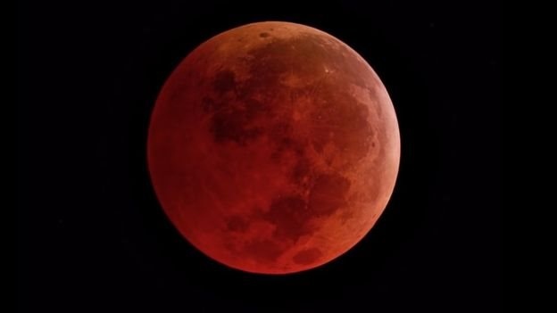
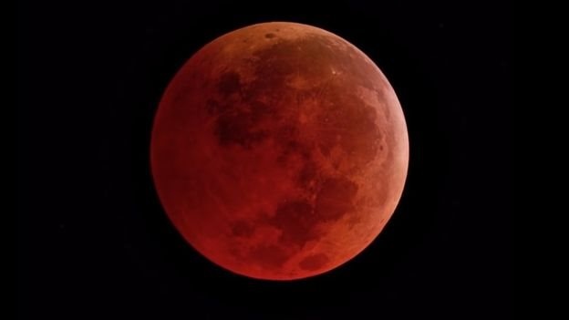

¿Qué es el Compostaje?
Es un proceso natural de descomposición de materiales orgánicos, como restos de alimentos, residuos de jardín y otros materiales biodegradables. Durante el compostaje, estos materiales se descomponen mediante la acción de microorganismos, como bacterias, hongos y lombrices, en un ambiente controlado y favorable.
Desglose del tema
El compostaje es un proceso de descomposición natural de materiales orgánicos que se utiliza para convertir los residuos en compost, un fertilizante orgánico rico en nutrientes. A continuación se presenta un desglose detallado de los elementos clave del tema del compostaje:
1- Materiales aptos para el compostaje:
Residuos de cocina: Restos de frutas, verduras, cáscaras de huevo, posos de café, té y filtros de papel.
Residuos de jardín: Hojas, césped cortado, ramas pequeñas, plantas viejas y recortes de arbustos.
Otros materiales orgánicos: Paja, papel y cartón sin tinta, aserrín, virutas de madera y estiércol de animales herbívoros.
2- Beneficios del compostaje:
Mejora del suelo: El compost mejora la estructura del suelo, aumenta su capacidad de retención de agua, promueve la aireación y mejora la disponibilidad de nutrientes para las plantas.
Fertilización natural: El compost es un fertilizante orgánico rico en nutrientes esenciales para las plantas, como nitrógeno, fósforo y potasio.
Reducción de residuos: El compostaje reduce la cantidad de residuos enviados a los vertederos y disminuye la emisión de gases de efecto invernadero asociados con la descomposición de los residuos orgánicos.
3- Métodos de compostaje:
Compostaje en pilas: Los materiales se acumulan en capas y se mezclan periódicamente para promover la descomposición y el equilibrio de nutrientes.
Compostaje en contenedores: Los materiales se colocan en contenedores especiales diseñados para el compostaje, que facilitan el proceso de aireación y control de humedad.
Compostaje en vermicomposteras: Se utilizan lombrices para descomponer los residuos orgánicos y producir compost de alta calidad.
4- Factores clave del compostaje:
Relación de carbono a nitrógeno (C/N): Es importante mantener una proporción adecuada de materiales ricos en carbono (como hojas secas) y materiales ricos en nitrógeno (como restos de cocina) para obtener un proceso de compostaje eficiente.
Aireación y mezcla: Es fundamental proporcionar oxígeno y mezclar los materiales regularmente para favorecer la actividad microbiana y acelerar la descomposición.
Control de la humedad: El compostaje requiere una humedad óptima, ni demasiado seco ni demasiado húmedo, para mantener una actividad microbiana adecuada.
Temperatura: El compostaje genera calor debido a la actividad microbiana. Una temperatura más alta puede acelerar el proceso de descomposición.
5- Tiempos de compostaje:
El tiempo necesario para obtener compost varía según los materiales utilizados, el método de compostaje y las condiciones ambientales. Por lo general, el proceso puede durar de unos meses a un año.
6- Uso del compost:
El compost maduro se puede utilizar como fertilizante en jardines, huertos, macetas y césped para mejorar la calidad del suelo y promover el crecimiento saludable de las plantas.
También se puede utilizar como capa de cobertura en los jardines para ayudar a retener la humedad y controlar las malas hierbas.
Curiosidades sobre el Compostaje
El compostaje se practica desde hace miles de años. Civilizaciones antiguas, como los egipcios y los romanos, ya utilizaban el compost para fertilizar sus cultivos.
Algunos materiales inusuales, como el cabello humano, las uñas, los recortes de césped y las hojas de té, también se pueden compostar y contribuir a la creación de un compost nutritivo.
El compostaje es una práctica clave en la agricultura regenerativa y la permacultura, ya que ayuda a mejorar la salud del suelo, aumentar la biodiversidad y reducir la dependencia de fertilizantes químicos.

 
